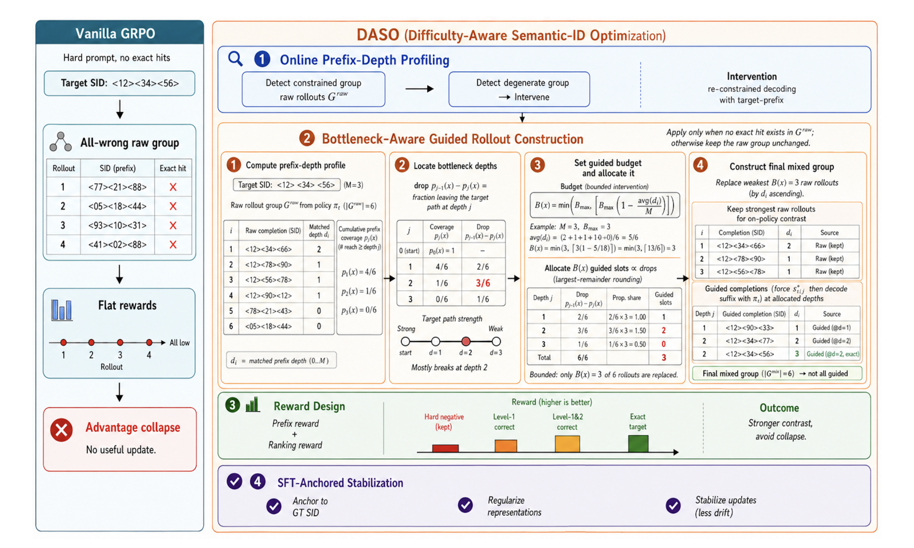
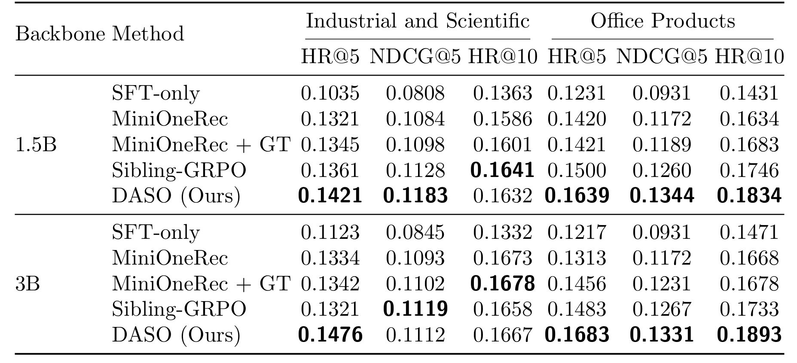
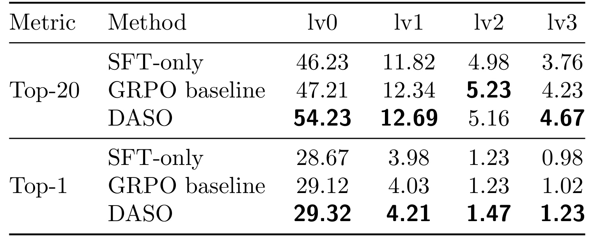
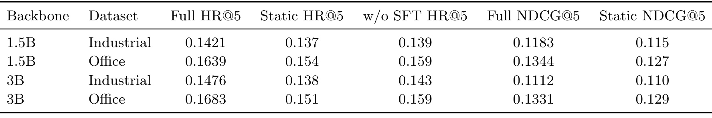
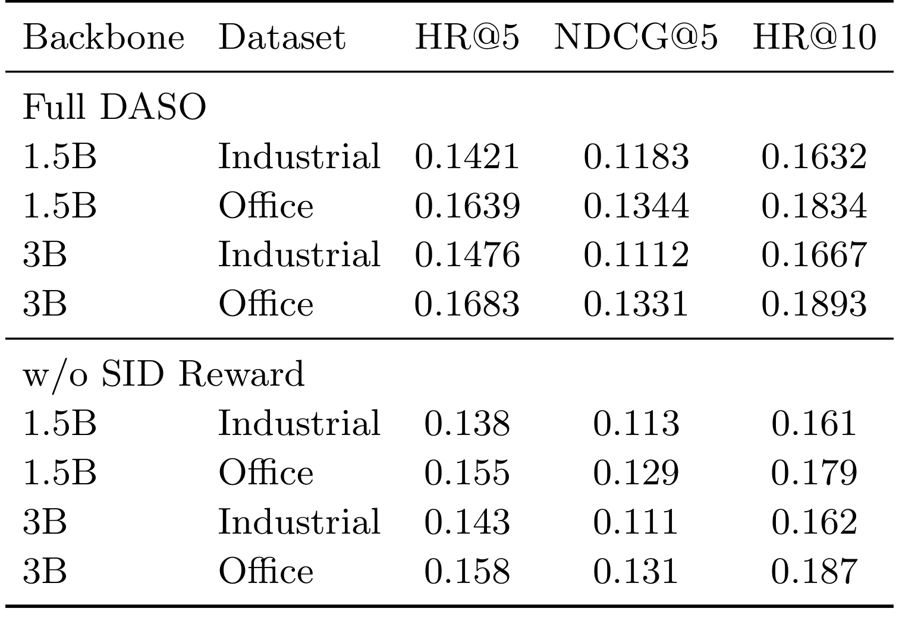
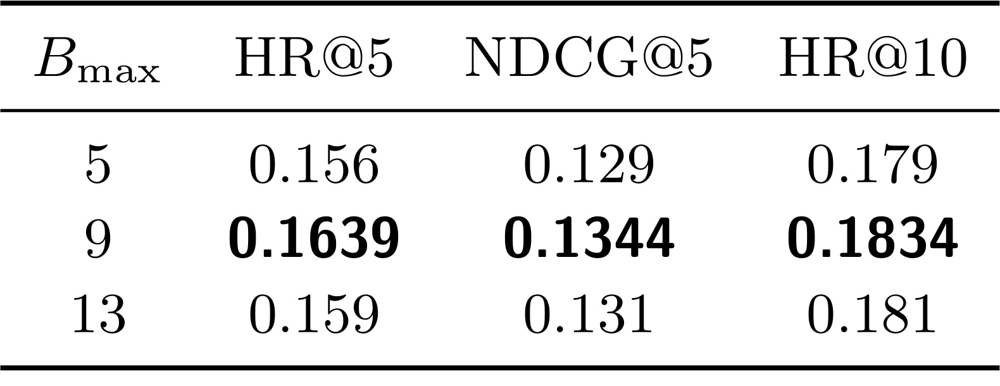
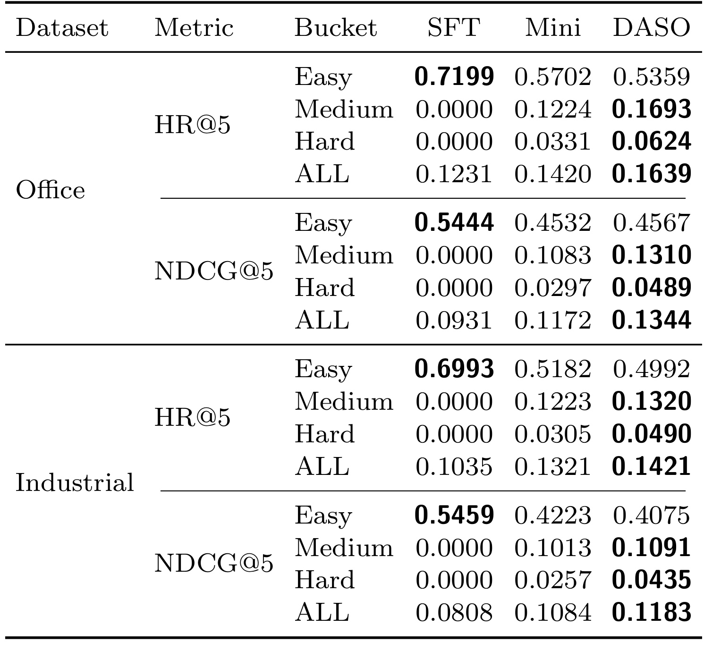
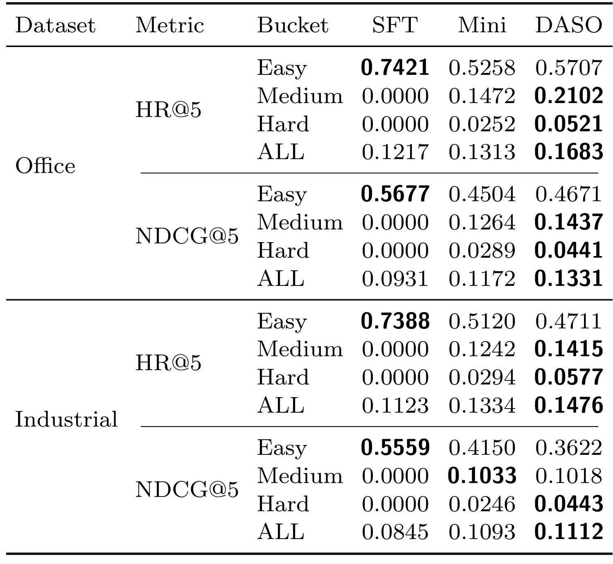

Difficulty-Aware Semantic-ID Optimization for Generative Recommendation / 面向生成式推荐的难度感知 Semantic-ID 优化
作者： Xin Yu、Stephen Li、Sina Aghaei、Zifan Zhu、Jiamu Bai、Guanjie Huang、Bo Peng、Yiyao Liu、Lingzhou Xue
机构： Meta、宾夕法尼亚州立大学。第一作者 Xin Yu 同时署名 Meta 与宾夕法尼亚州立大学，论文注明本工作在其 Meta 实习期间完成。
公开时间： 2026-08-20
论文入口： arXiv:2608.20611
代码状态： LucasXinYu/DASO 已核验可访问（HTTP 200）。
方向： 生成式推荐、Semantic ID、GRPO、难度感知 rollout、树结构信用分配。
1. 背景和问题
1.1 从“候选打分”到“生成物品标识”
传统推荐系统通常把召回与排序拆成两段：先从巨大目录里找出较小候选集，再用更重的模型为候选逐项打分。Semantic-ID 生成式推荐尝试把两段合并成受约束的序列生成：每个物品先被编码为一个短的离散 token 序列，模型读取用户历史后，直接按从粗到细的层级生成目标物品的 SID。高层 token 决定大语义分支，低层 token 再缩小到具体物品；前缀 trie 保证解码结果属于有效目录。TIGER、OneRec 与 MiniOneRec 等工作已经说明，这一接口能把检索、排序和大模型的自回归训练范式连接起来，但它也让“第一步走错分支”的代价变得格外高：早期 token 一旦偏离目标路径，后续 token 即使局部合理，也很难回到正确物品。
常见训练流程是先用真实用户—物品对做监督微调，再用 GRPO 之类的组相对强化学习优化推荐奖励。GRPO 不训练独立 critic，而是对同一提示采样一组候选，用组内奖励均值和方差构造优势。这种设计依赖一个前提：组里必须有足够的奖励差异。若至少出现一次精确目标命中，命中项和错误项之间自然形成对比；可是当整个组没有目标物品时，MiniOneRec 风格的精确物品奖励与排序奖励可能全部为零。此时模型明明已经生成了“前两层正确、最后一层错误”的候选，却和“第一层就走错”的候选得到相同反馈，树结构中珍贵的部分进展被抹平。
在 MiniOneRec 的奖励下，即使部分候选已经沿目标 SID 路径匹配了若干层，目标缺失的 rollout 组仍可能全部得到相同的零奖励。
1.2 target-missing 不是边角案例
论文先冻结 SFT checkpoint，用同一套 50-beam 受约束排序，对每个提示取前 16 个候选做诊断。公开测试集中，52.5%—63.9% 的提示在这 16 个候选里连目标 SID 的第一层 token 都没有匹配；更一般地，许多提示的前 16 个候选也不包含完整目标。Office Products 尤其困难：Qwen2.5-1.5B 与 3B 下，Hard 提示分别占测试集 63.7% 与 63.9%；Industrial and Scientific 对应为 53.3% 与 52.5%。这些百分比是冻结 SFT 模型的提示级诊断，并不等价于训练时每个 on-policy 组都一定以同样比例失败；论文据此提出的是一个训练风险：当当前策略采出的组呈现相似 target-missing 形态，组相对优势会在最需要探索的样本上变弱甚至坍缩。
这个诊断把问题从“奖励太稀疏”推进了一步。Semantic-ID 是树，不同失败具有不同位置：no-prefix 组连根部分支都进不去，partial-prefix 组已经走对若干层，只在某个更深瓶颈分叉。统一注入完整 ground-truth completion 可以制造正样本，却没有回答该给多少提示、该从哪一层提示；若把全组都替换成教师路径，又会失去 GRPO 需要的当前策略对比。DASO 因而同时面对三项约束：为目标缺失组补充目标路径信号、保留足够 raw rollout 维持组内对比、避免强化学习破坏 SFT 已经能精确命中的样本。
论文的主要新意不是发明新的 SID tokenizer，也不是改造推理期 beam search，而是把上述约束表述为在线 rollout 资源分配：每一步都读取当前策略这一组候选的前缀深度分布，定位掉出目标路径最严重的层级，只用有限预算替换最弱候选，同时用分级前缀奖励与监督锚点稳定更新。这与 LUFFY、BREAD、Prefix-RFT 等“部分引导轨迹”工作有共同动机，但 DASO 的引导深度直接来自目标 SID 树和当前 rollout 组，不依赖外部推理轨迹、固定难度桶或额外价值模型。它要回答的核心问题因此很明确：树结构生成任务能否利用当前组的前缀进展，主动把采样预算送到奖励最缺失的层级，并在不丢掉 on-policy 对比的前提下改善最终物品排序？
2. 方法
2.1 Semantic-ID 生成与 target-missing 失效条件
对目录中的物品 (v)，固定 tokenizer 把它映射为长度为 (M) 的层级标识。公开 Amazon 实验使用三层 SID，内部任务使用四层 SID；不同层可以拥有不同 codebook 大小。模型并不自由生成任意字符串，而是在有效 SID 前缀 trie 下逐层产生 token，再由固定索引解析回物品。
符号解释：(x) 是序列化后的用户上下文，(v) 是目标或候选物品，(s(v)) 是其固定 Semantic ID，(M) 表示 SID 深度，(C_\ell) 是第 (\ell) 层可用 code 数；(\hat{s}) 是策略生成的候选 SID，(\hat{s}{<\ell}) 是此前已经生成的前缀，(\pi\theta) 则是参数为 (\theta) 的推荐策略。乘积形式强调后层决策受前层约束，因此第一层错误会把整个后续生成送入错误子树。
DASO 用最长相同前缀衡量部分正确性。若第一层就错，深度为 0；若全部 (M) 层一致，深度为 (M)，也就是精确沿目标 SID 路径完成。对同一提示采出的 (G) 个候选，vanilla GRPO 仍按奖励的组内标准化计算优势；若所有奖励相同，分子同时接近零，策略梯度无法区分“差一点命中”和“完全走错”。
符号解释：(s^\star) 是真实目标 SID，(m(\hat{s},s^\star)) 返回候选与目标从根开始连续匹配的层数；(\hat{s}{1:j}) 与 (s^\star{1:j}) 分别是两者前 (j) 层前缀。(R_i) 是第 (i) 个候选的标量奖励，(A_i) 是其组相对优势，(G) 为组大小，(\delta) 是防止标准差为零时数值不稳定的小常数。真正的失效点不是“奖励绝对值低”，而是同组奖励缺少差异，导致所有 (A_i) 同时失去方向。

Figure 1 左侧把失效链路画得很具体：hard prompt 产生一组全部走错的 raw SID，精确奖励形成一条平直零线，最后出现 advantage collapse。右侧不是简单塞入一个正确答案，而是四个连续阶段。第一阶段用当前组构造前缀深度 profile；第二阶段由每层掉落定位瓶颈，计算有上限的引导预算，并把预算按掉落量分到不同深度，再用引导 completion 替换最弱 raw 候选、保留最强 raw 候选；第三阶段同时给精确命中、排序位置和前缀进展计分，使组内重新出现梯度；第四阶段用真实 SID 的 SFT 损失约束表示漂移。图中 no-prefix 与 partial-prefix 两种面板尤其重要：它们没有被硬编码成两套训练器，而是由同一个当前组统计规则自然得到不同引导深度。DASO 改的是训练时一组 rollout 的信息组成，而不是推理时的目录索引、约束解码器或最终目标定义。
2.2 Online Prefix-Depth Profiling
每次强化学习更新，DASO 先从当前 rollout policy (\pi_t) 在有效 SID trie 下采样 (G) 个 raw completion，并为第 (i) 个候选计算 (d_i=m(\hat{s}^{(i)},s^\star))。它不沿用训练开始前冻结 SFT 得到的 Easy/Medium/Hard 标签，而是重新统计当前策略此刻能走多深。这样做的必要性在于策略会随训练变化：某个最初 Hard 的提示可能已经学会第一层，某个原本 Easy 的提示也可能因策略漂移不再稳定；静态标签无法反映这种状态转移。
符号解释：(d_i) 是第 (i) 个 raw completion 的最长目标前缀深度，(p_j(x)) 是当前提示 (x) 的候选组中至少正确走到第 (j) 层的比例，(\mathbf{1}[\cdot]) 为示性函数。再令 (p_0(x)=1)，相邻差 (p_{j-1}(x)-p_j(x)) 就表示“前 (j-1) 层还在目标路径、到第 (j) 层首次掉出”的 rollout 比例；差值越大，该层越像当前组的瓶颈。这个累计 profile 对三层和四层 SID 使用同一公式，不需要重新定义难度类别。
举例说，若三层 SID 的六个 rollout 深度近似为 ([1,1,0,0,0,0])，模型主要在第一层进入目标分支时失败，也有一部分在第二层失败；若深度为 ([2,2,1,1,0,0])，引导应更多落在第二、三层，而不是重复教模型已经掌握的根分支。profile 的作用不是给提示永久贴上“难”或“易”的标签，而是把本次采样中目标路径的断点转成可以分配 rollout 的在线信号。
2.3 Bottleneck-Aware Rollout Allocation
若 raw 组已经包含完整目标 SID，即存在某个 (d_i=M)，DASO 不替换任何候选，因为命中与未命中已提供组内对比；该提示仍参与 GRPO 和 SFT 损失。否则，算法先由平均前缀深度决定本次最多替换多少个 raw completion。预算随组平均深度降低而增大，并始终受 (B_{\max}<G) 限制。
符号解释：(B(x)) 是提示 (x) 本次实际使用的引导替换数，(B_{\max}) 是最大预算，(G) 是 raw 组大小，(M) 是 SID 层数，(\sum_i d_i/(GM)) 是归一化平均前缀进度。无前缀组的平均进度接近零，预算趋近 (B_{\max})；已有较深部分前缀但仍未精确命中的组使用更少预算；外层 (\min) 与向上取整保证预算有界且是整数。论文公共配置为 (G=16)、(B_{\max}=9)，所以即使最难组也至少保留 7 个 raw 候选。
接下来，DASO 按各层掉落量 (p_{j-1}-p_j) 的比例分配这 (B(x)) 个 slot，并用 largest-remainder rounding 保证整数分配恰好相加为预算。分到深度 (j) 的引导 completion 固定真实前缀 (s^\star_{1:j})，剩余 suffix 仍由当前策略 (\pi_t) 在同一 trie 下采样。算法按前缀深度从弱到强排序 raw 候选，替换最弱的 (B(x)) 个，保留最强者作为 on-policy 对照。被强制的 prefix token 只视为条件，不进入 GRPO likelihood ratio 与 KL；策略梯度只作用于模型实际采样的 suffix token。因此这不是把强化学习改回完整 teacher forcing，而是把有限教师信息插入最缺信号的位置，再让策略自己完成余下路径。
2.4 Difficulty-Aware Reward 与 SFT-Anchored Stabilization
混合组构造完成后，DASO 保留 MiniOneRec 的精确物品奖励和归一化排序奖励，再加一个按最长前缀深度归一化的 (R_{\mathrm{sid}})。精确命中仍是独立奖励项，所以只匹配浅层前缀不能最大化总奖励；但当组里没有完整目标时，不同前缀深度终于不再全部归零。
符号解释：(R_{\mathrm{acc}}) 只在候选解析为真实目标物品时取 1，(R_{\mathrm{sid}}) 把前缀匹配层数缩放到 ([0,1])，(R_{\mathrm{rank}}) 是沿用 MiniOneRec 的归一化排名奖励，(\lambda_{\mathrm{rank}}=0.3) 控制其权重。公开实验把 SID-prefix 项权重固定为 1。三者分工是：准确项守住最终物品目标，排名项处罚组内靠前的错误候选，前缀项在精确命中稀缺时制造分级信用。
引导 completion 改变了部分训练轨迹分布，可能帮助困难提示，却也可能使模型忘记 SFT 已经解决的 exact-hit 提示。DASO 因此在 GRPO 目标旁并行加入真实 SID 的 token 级负对数似然。它并不只在 Easy 样本上使用，也不把 Easy/Medium/Hard 标签带入训练；每个提示都用相同的真实序列监督锚定。
符号解释：(\mathcal{L}{\mathrm{SFT}}) 是沿真实目标 SID 的逐 token 监督损失，(s^\star{<\ell}) 是真实前缀；(\mathcal{L}{\mathrm{GRPO}}) 包含 clipped policy surrogate 与相对固定参考策略的 KL 约束，(\lambda{\mathrm{sft}}=0.1) 是监督锚点权重。训练期才进行 profile、引导替换、混合组奖励和双损失更新；推理期仍然只是当前模型配合固定有效 SID trie 做 50-beam 受约束解码，不需要知道真实前缀，也不运行引导分配器。
3. 实验结果
3.1 公开 Amazon：总体排序质量
公开实验采用 Amazon Reviews 2018 的 Office Products 与 Industrial and Scientific 两类数据，遵循 5-core、按时间顺序的 next-item protocol。Office 含 3,459 个物品、38,924/4,866/4,866 条 train/valid/test 序列；Industrial 含 3,686 个物品、36,259/4,532/4,533 条序列。二者都使用 MiniOneRec 官方三层 SID，每层 256 个 code，映射在所有方法间固定。主干为 Qwen2.5-1.5B-Instruct 与 Qwen2.5-3B-Instruct；先做 full-parameter SFT，再从同一 checkpoint 开始各自的 RL 阶段。公共配置包括 cutoff 512、SFT batch size 128、rollout group (G=16)、KL 系数 (10^{-3})、学习率 (10^{-5})、600 次优化更新、(B_{\max}=9)、(\lambda_{\mathrm{sft}}=0.1)，最终用 50-beam 受约束解码报告 HR@5、NDCG@5、HR@10。

Table 2 必须按“两个数据集 × 两个主干 × 三个指标”来读。与 MiniOneRec-style GRPO 相比，DASO 在 12 个单元中改善 11 个：1.5B Industrial 的 HR@5/NDCG@5/HR@10 从 0.1321/0.1084/0.1586 变为 0.1421/0.1183/0.1632；1.5B Office 从 0.1420/0.1172/0.1634 提至 0.1639/0.1344/0.1834。3B Office 的提升更大，从 0.1313/0.1172/0.1668 到 0.1683/0.1331/0.1893。唯一相对 MiniOneRec 未改善的单元是 3B Industrial HR@10：0.1667 略低于 0.1673。若把 SFT-only、MiniOneRec、MiniOneRec+GT、Sibling-GRPO 与 DASO 全部比较，DASO 在 12 个指标中取得 9 个最佳；其余最佳分别由 Sibling-GRPO 或 GT injection 获得。因此“11/12 改善”和“9/12 最佳”只指这两类 Amazon、两种 Qwen backbone 组成的公开指标集合，不能扩写为所有数据集、所有模型或线上场景的普遍结论。
Office 的 HR@5 收益比 Industrial 更明显：1.5B 相对 MiniOneRec 增加 0.0219，3B 增加 0.0370；Industrial 对应为 0.0100 与 0.0142。论文把这与 Office 中 no-prefix Hard 提示占比更高联系起来，这个解释与机制相符，但仍是相关性证据：DASO 同时改变 rollout allocation、SID-prefix reward 和 SFT anchor，完整框架对比不能单独证明收益全部来自在线分配。类似地，DASO 相对 MiniOneRec+GT 在 11/12 个指标更高、相对 Sibling-GRPO 在 10/12 个指标更高，只能说明完整配置更强；真正的组件归因还要看后续消融。
跨主干还可以看到一个值得警惕的现象：从 1.5B 换到 3B 并不会让 MiniOneRec 在 Office 上自然变强，它的 HR@5 反而从 0.1420 变为 0.1313；DASO 则从 0.1639 小幅增至 0.1683。这个对照暗示困难并非单靠参数规模就能消除，rollout 组是否覆盖目标分支仍是独立因素。不过两种主干都属于同一家族，且超参数没有展示逐模型完整搜索过程，所以不能据此断言 DASO 对任意更大模型都会扩大收益。更有价值的后续是固定采样与计算预算，比较模型规模、SFT 质量和在线引导三者各自贡献，而不是把 3B 一列直接当成规模律证据。
3.2 内部四级 SID：迁移证据与不可复现边界
内部任务使用 1.36M 条主要推荐样本、319K 用户、约 1.2M 条 SFT 池、100K 个 GRPO 提示和约 36K 个独立受约束生成评测提示。每个物品使用四层 SID，每层理论 codebook 为 2,048，目标集合含 225,855 个唯一完整 SID。论文只公开聚合规模、分层空间覆盖与结果，未开放原始交互、目录元数据或数据访问代码，所以它更像“更深更宽树上的压力测试”，不能作为他人可独立复现的公开 benchmark，更不能据此声称线上生产收益。

Table 3 的最强变化出现在粗层分支：相对 GRPO baseline，DASO 的 Top-20 lv0 recall 从 47.21% 提到 54.23%，增加 7.02 个百分点；最终 lv3 从 4.23% 到 4.67%，Top-1 lv3 从 1.02% 到 1.23%。这支持“早期瓶颈引导能更常把生成送入正确粗分支，并有一部分收益传到完整 SID”的机制。证据又不是单向的：Top-20 lv2 从 baseline 的 5.23% 降到 5.16%，说明不同 beam 深度和前缀层之间存在重分配，不应写成四层所有指标全面提升。Top-1 的四个层级均提高，但幅度从 lv0 的 0.20 个百分点到 lv3 的 0.21 个百分点，不能与公开 Amazon 的 HR/NDCG 指标直接横比。
内部实验还显示树深度本身不是方法的硬编码限制：profile 与最长前缀深度公式把 (M=3) 和 (M=4) 统一起来。然而，内部 SID 第一层实际使用 1,871/2,048 个 code，完整 SID 占理论 (2{,}048^4) 空间的比例极小，目录结构与公开 Amazon 差异很大；公开代码即使包含 DASO 算法，也无法重建这些私有 SID、用户上下文和受约束评测集合。因此最稳妥的结论是“作者报告了跨更深 SID 树的迁移迹象”，不是“内部场景已被独立复现”或“方法已经部署并验证业务收益”。
3.3 在线难度、前缀奖励、预算与锚点的消融
论文先把在线 profile 替换成静态难度变体：训练前用冻结 SFT 的前 16 个 50-beam 候选划分桶，Easy 不引导，Medium 注入一个完整目标，Hard 固定用九个 slot——一个完整目标、四个两层目标前缀、四个一层目标前缀。该变体仍保留弱 raw rollout 替换逻辑，但训练过程中不再根据当前组变化。另一条 no-SFT 变体则保留 DASO 分配与奖励，只令 (\lambda_{\mathrm{sft}}=0)。

Table 6 显示 Full DASO 在四个 backbone—dataset 组合上都高于 Static HR@5：1.5B Industrial/Office 分别为 0.1421 对 0.137、0.1639 对 0.154；3B 为 0.1476 对 0.138、0.1683 对 0.151。NDCG@5 也全部更高。这个结果说明冻结标签加固定配方不足以追踪训练中不断变化的策略状态，但它只排除了论文测试的这一种 static heuristic，不能证明任意静态或学习型控制器都更差。移除 SFT anchor 后，四组 HR@5 分别降到 0.139、0.159、0.143、0.159，聚合方向一致；不过附录 Easy 桶结果并不一致，例如 1.5B Office 的无锚点 Easy HR@5 反而高于 Full。由此更合理的解释是监督锚点改善整体稳定性，而非保证每个 Easy 子集都单调变好。

Table 8 在保持在线分配、(B_{\max}=9)、排序权重 0.3 和 SFT 权重 0.1 不变时，只移除 (R_{\mathrm{sid}})。Full 在所有列都更高：1.5B Office HR@5 从 0.155 到 0.1639，Industrial 从 0.138 到 0.1421；3B Office 从 0.158 到 0.1683，Industrial 从 0.143 到 0.1476。NDCG@5 与 HR@10 也保持同向，但多数差值较小。这与“前缀信用为 target-missing 组提供中间区分”一致，同时也说明它不是唯一收益源：完整 DASO 还依赖引导 rollout 改变探索覆盖、精确物品奖励守住最终目标、SFT anchor 控制漂移。论文均为 single run，表中稳定同向不能替代多随机种子方差或显著性检验。

Table 9 只在 Office 1.5B 上比较 (B_{\max}\in{5,9,13})。默认 9 的 HR@5/NDCG@5/HR@10 为 0.1639/0.1344/0.1834，高于预算 5 的 0.156/0.129/0.179，也高于预算 13 的 0.159/0.131/0.181。曲线不是“引导越多越好”：预算 5 可能不足以把 no-prefix 组送入目标分支，预算 13 又替换掉更多当前策略样本，使组内 raw contrast 变弱。这个三点敏感性支持有界介入的设计直觉，却还不足以证明 9 是跨数据集最优常数；更深 SID、更大组大小或不同 SFT 强度都可能需要重新调节预算比例。由于该敏感性只覆盖一个数据集与一个主干，预算位置尚不能视为普适最优点。
3.4 难度桶：收益究竟来自哪里
Easy、Medium、Hard 只用于评测分解。作者对冻结 SFT 的 50-beam 排名取前 16 个候选，令其中最大前缀深度为 (d_{\max})：(d_{\max}=M) 是 Easy，(0<d_{\max}<M) 是 Medium，(d_{\max}=0) 是 Hard。桶在 RL 前一次确定、对所有方法保持不变；DASO 训练时仍使用当前策略 raw 组的在线 profile。由于 Medium/Hard 按同一冻结 SFT 排名构造，SFT-only 在这些桶的 HR@5 与 NDCG@5 为零是定义导致的，不代表它在任意其他评测口径下都无法处理这些提示。

Table 13 对 1.5B 给出最直接的机制证据。相对 MiniOneRec，Office Medium HR@5 从 0.1224 到 0.1693，增加 0.0469；Hard 从 0.0331 到 0.0624，增加 0.0293。Industrial Medium 从 0.1223 到 0.1320，Hard 从 0.0305 到 0.0490。NDCG@5 的 Medium/Hard 也全部上升，说明改善不仅是让目标偶尔进入 top-5，也包含名次质量变化。与此同时，Easy HR@5 在 Office 从 Mini 的 0.5702 降到 0.5359，在 Industrial 从 0.5182 降到 0.4992；两者又都低于该桶的 SFT-only。也就是说，聚合提升确实主要由 initially target-missing 样本贡献，但强化学习仍对已解样本造成一定回退，SFT anchor 只是缓解而没有消除这个稳定性问题。

Table 14 在 3B 上复现大方向：Office Medium HR@5 从 0.1472 提到 0.2102，Hard 从 0.0252 到 0.0521；Industrial Hard 从 0.0294 到 0.0577，Medium HR@5 从 0.1242 到 0.1415。反例同样重要：Industrial Medium 的 NDCG@5 从 Mini 的 0.1033 略降到 DASO 的 0.1018；Industrial Easy HR@5 从 0.5120 降至 0.4711。Office Easy 则从 Mini 的 0.5258 回升到 0.5707，但仍显著低于冻结 SFT 的 0.7421。跨两个主干看，DASO 最可靠的模式是提高 Medium/Hard 的分支进入与最终排序，而不是让所有桶、所有指标同时增长。这也解释了总体 11/12 改善与 9/12 最佳为何可以成立，却不应被简化成“无代价提升”。
实验的总体可信度来自多种证据相互对齐：公开两数据集与两主干的总体指标、内部更深树的分层 recall、在线/静态控制器对比、前缀奖励消融、预算敏感性和固定桶诊断，都指向“target-missing 组需要按路径深度恢复对比信号”。但证据强度仍受协议限制：所有报告数字来自单次算法运行，没有多 seed 方差和统计显著性；主实验使用 8 张 NVIDIA A100 80GB，复现成本不低；内部任务又不可公开。代码仓库可访问提高了公共 Amazon 流程的可检查性，但最终复现仍应验证预处理、官方 MiniOneRec SID 映射、随机种子和 exact constrained-decoding 实现是否与论文一致。
4. 总结
4.1 可以带走的结论
DASO 抓住了 Semantic-ID 生成式推荐与通用文本 GRPO 的结构错配：候选不是彼此无关的字符串，而是同一棵物品树上的路径；当目标完全缺席时，精确物品奖励会忽略“已经走对几层”的差别。它用当前 rollout 组的累计前缀 profile 找出瓶颈，用受限预算把部分候选引导到相应目标前缀，同时保留最强 raw rollout；再以 SID-prefix reward 提供分级信用、以 SFT loss 守住已学会的真实 SID。最值得借鉴的并非固定超参数 9，而是让探索预算由当前组的失败位置决定，并显式保留产生相对优势所需的策略对照。
对推荐系统工程，DASO 提供了一条介于完全 on-policy 探索和 ground-truth teacher forcing 之间的训练路径，适合所有具有层级 item code、受约束生成和稀疏终点奖励的召回—排序统一模型。对大模型后训练，它也给出更一般的启发：若输出空间有可验证的层级状态，可以把中间结构转成 rollout allocation 与 reward credit，而不只是把更密奖励静态加到总分。这里的可迁移条件是“部分进展确实具有任务语义”；若标识前缀并不代表物品相似性，错误前缀奖励反而会优化错误代理目标。
4.2 局限、风险与后续
局限一：统计稳定性不足。 公共与内部结果均为 single run，没有多随机种子均值、方差或显著性检验。GRPO 对 rollout 采样高度敏感，表中小幅差异，尤其 Industrial 3B NDCG 与若干消融差值，可能落在训练波动范围内。
局限二：Easy 样本仍有回退。 桶级结果显示 SFT-only 在已精确命中的 Easy 提示上明显更强，DASO 与 MiniOneRec 的对比也并非总是改善。SFT anchor 在聚合指标上有稳定作用，但没有证明能完全阻止已解样本遗忘；部署前需要单独设定回退门槛。
局限三：公开外推范围有限。 11/12 与 9/12 只覆盖 Office Products、Industrial and Scientific，以及 Qwen2.5-1.5B/3B 的 12 个公开指标。目录更大、历史更长、SID tokenizer 不同、候选约束更弱或多目标推荐场景都可能改变前缀深度的含义。
局限四：内部任务不可独立复现。 四级 SID 数据、用户上下文和目录映射未公开；论文报告的是离线分层 recall，不是线上 A/B、延迟、收入或长期满意度。它不能支撑“已在 Meta 生产验证”或任何线上收益表述。
局限五：计算与控制器仍较重。 主实验使用 8 张 A100 80GB，且每个提示先采完整 raw 组、再为部分 slot 生成 suffix。论文没有给出相对 MiniOneRec 的端到端训练吞吐、额外 token 数、显存变化或单位提升成本；在线 profile 虽不需要额外 value model，却不等于没有采样开销。
后续首先应在公开代码上做至少 3—5 个随机种子，报告总体指标、难度桶指标和 Easy 回退的置信区间，并复核 11/12 的方向是否稳定。其次应把 (B_{\max}) 从绝对常数改为与组大小、SID 深度和 profile 熵相关的比例控制，比较规则控制器与轻量学习型 allocator，同时严格保留 raw rollout 下限。第三应加入训练效率审计：逐项记录原始/引导 completion 数、每步 token、吞吐、显存和 wall-clock，判断收益是否来自更多有效采样而非隐藏预算。第四应跨不同 SID tokenizer 与更大目录检验 (R_{\mathrm{sid}}) 的语义可靠性，并尝试对不同层赋予非均匀权重；若高层前缀并不稳定代表物品相似性，应考虑用目录统计或可校准价值替代简单深度比例。最后，若进入真实系统，应把 Easy 样本回退、长尾物品覆盖、重复推荐、用户群公平性和在线延迟设为与 HR/NDCG 同等重要的门槛，而不是把离线聚合提升直接当成发布依据。